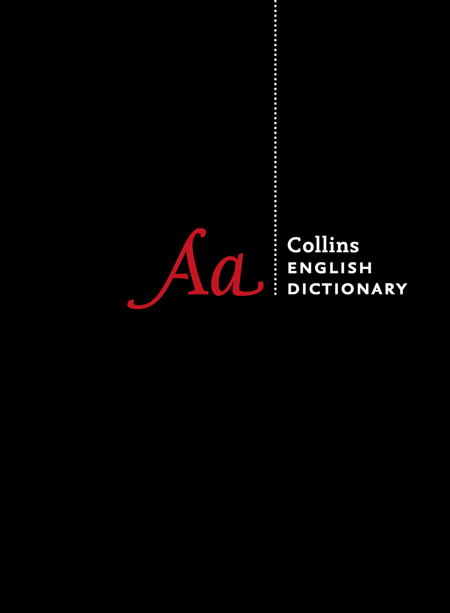

Version %version
Designed and developed by

MONOKAKIDO
in Tokyo, Japan
© MONOKAKIDO Co. Ltd. 2014
All rights reserved.

Collins ENGLISH DICTIONARY
Twelfth Edition 2014
© William Collins Sons & Co. Ltd 1979, 1986
© HarperCollins Publishers 1991, 1994 (Third updated edition), 1998, 2000, 2003, 2005, 2006, 2007, 2009, 2010,
2011, 2014
Version %version
Designed and developed by
MONOKAKIDO
in Tokyo, Japan
© MONOKAKIDO Co. Ltd. 2014
All rights reserved.